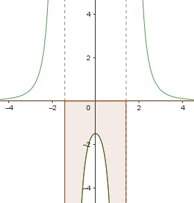

Aufgabe 56 Bestimmen Sie die Lösungsmenge der Ungleichung für x ∈ ℝ: 18x2 + 12 ------------ < 0 x ≠ √2 (x2 - 2)3 18x2 + 12 ist für alle x ∈ ℝ > 0 8x2 + 12 Soll ------------ < 0 sein, dann muss (x2 - 2)3 (x2 - 2)3 kleiner als 0 sein. Wenn x2 - 2 < 0, dann ist auch (x2 - 2)3 < 0. x2 - 2 < 0 |+2 x2 < 2|√ |x| < √2 ist der Fall, wenn |x| = x für x > 0 --> x < √2 und wenn |x| = -x für x > 0 --> -x < √2 |*(-1) x > -√2 x2 - 2 < 0 trifft zu für x < √2 ∩ x > -√2 = -√2 < x < √2 18x2 + 12 ------------ < 0 trifft zu für (x2 - 2)3 L = x ∈ ℝ ∩ -√2 < x < √2 L = -√2 < x < √2 oder Nullstellen: 18x2 + 12 = 0 |-12 18x2 = -12 |:18 2 x2 = - --- --> keine Nullstellen 3 Senkrechte Asymptoten: (x2 - 2)3 = 0 |∛ x2 - 2 = 0 |+2 x2 = 2 |ⱱ x1,2 = ± ⱱ2 Waagerechte Asymptoten: Für x --> ± ∞ geht f(x) --> 0 Die Funktionswerte zwischen den senkrechten Asymptoten liegen unterhalb der x-Achse, erfüllen also die Bedingung < 0. L = -√2 < x < √2
